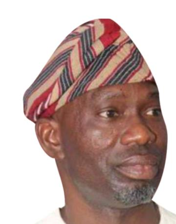

Ibadan North-East / Ibadan South-East
Hon. Abass Adigun Agboworin
APM candidate, Ibadan North-East/Ibadan South-East Federal Constituency
Profile
Agboworin is a two-term House of Representatives member, first elected in 2019 and re-elected in 2023. He is seeking a third term on the APM platform. His profile describes more than a decade of service in the United States Navy and education in business management and administration.
Reported achievements and areas of record
- Education support includes classroom blocks, learning materials, scholarships and examination assistance, including support for pupils at the Blind School, Orita-Aperin.
- Reported youth and women programmes include vocational and agricultural training, equipment, startup support, ICT training and laptops.
- Reported constituency projects include roads, boreholes and more than 1,100 solar streetlights across 24 wards.
- Health and security interventions include medical outreaches, mobile clinics, community security infrastructure and facilitation of a modern police station at Alafara-Atipe.
- His legislative focus includes drug abuse, youth development, social welfare and community security.
In brief: His reported record centres on education, youth and women empowerment, infrastructure, health and community security.